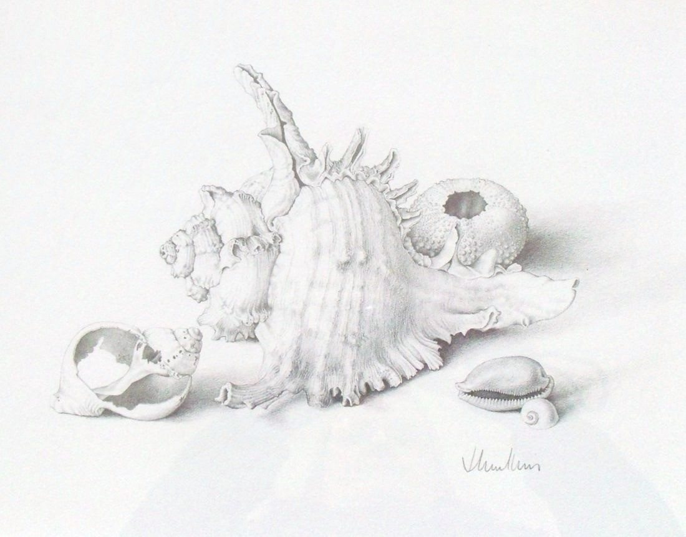

Pencil Study of Shells
- Medium
- Pencil on paper
- Size
- 26 × 34 cm
- Year
- 1989
- Price
- £250
- Catalogue no.
- 185
I enjoy drawing, and this is one of a number of detailed shell studies I have done over the years.
Ask about this painting
I enjoy drawing, and this is one of a number of detailed shell studies I have done over the years.
Ask about this painting